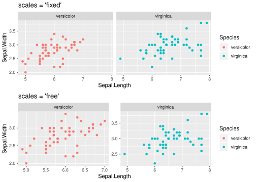
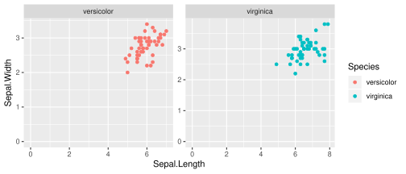
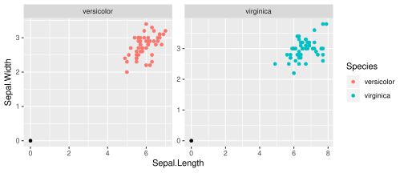
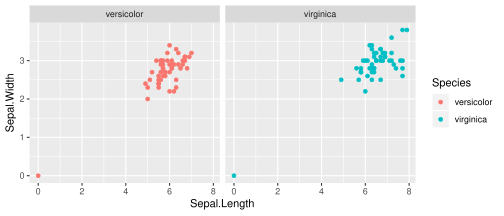
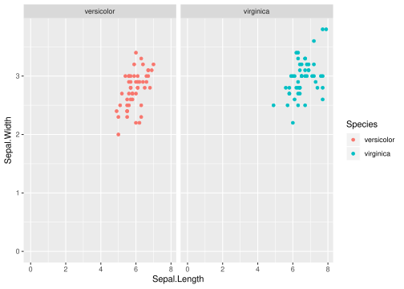
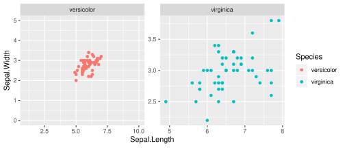

前に Tokyo.R で「ggplot2で図を並べる」と題して色々話させてもらいました．時間や難易度の都合で話し切れていない部分も多々あるのですが，今日はその中の1つを補足したいと思います．
はじめに
ggplot2 で facet を使って図を並べる時， scales 引数を指定することで
facet ごとの軸の範囲を可変にできます．軸の範囲は ggplot2 がそれっぽく決めてくれるのですが，特定の facet について自分でコントロールしたい時はどうすればいいでしょうか．
facet の基本的な例
パッケージのロード
scales 引数を変えた時の様子を比較
x <- iris %>% filter(Species != "setosa") # Species を 2種に制限
g <- ggplot(x, aes(Sepal.Length, Sepal.Width, colour = Species)) +
geom_point()
wrap_plots(
g + facet_wrap(vars(Species), scales = "fixed") + # scales = "fixed" が既定値
ggtitle("scales = 'fixed'"),
g + facet_wrap(vars(Species), scales = "free") +
ggtitle("scales = 'free'"),
ncol = 1
)
全 facet 共通で xmin = ymin = 0 にしてみる
特定の facet について軸の範囲をコントロールするための準備体操として，全 facet 共通で xmin = ymin = 0 にしてみましょう．つまり，原点が左下に来るようにしてみます．
実は xlim, ylim を使うだけで簡単にできてしまいますが，それはそれとしてやってみましょう．
g + facet_wrap(vars(Species), scales = "free") +
xlim(0, NA) +
ylim(0, NA)
free-scale facet において軸の範囲はデータの範囲で決定されるので，原点に点をプロットしてやれば OK です．
facet ごとに Sepal.Length = 0, Sepal.Width = 0 となるデータを持つデータフレーム df_lims を作り，このデータフレームに基いた レイヤーを追加してみます．
df_lims <- expand.grid(Sepal.Length = 0, Sepal.Width = 0, Species = unique(x$Species))
g +
geom_point(data = df_lims, colour = "black") +
facet_wrap(vars(Species), scales = "free")
上図ではわかりやすいように原点に黒点をプロットしましたが，非表示にしたい場合は alpha = 0 にしてやります．
g +
geom_point(data = df_lims, alpha = 0) +
facet_wrap(vars(Species), scales = "free")別解として，元のデータフレームにデータを追加しておくこともできます． facet を個別に扱うにはこちらのテクニックが必要になります．
ggplot(bind_rows(x, df_lims), aes(Sepal.Length, Sepal.Width, colour = Species)) +
geom_point() +
facet_wrap(vars(Species))
しかしこの場合は，原点にいる点の色のコントロールが厄介になってしまいます．表示したいデータとしたくないデータを区別できる列がないからです．そこで，表示したいデータについては alpha = 1，表示したくないデータについては alpha = 0 となるようにデータを追加してあげ， aes(alpha = alpha) を指定しましょう．
ggplot のレイヤには scale_alpha_identity()
を足してあげることで，データ通りの透明度になります．
bind_rows(
mutate(x, alpha = 1),
mutate(df_lims, alpha = 0)
) %>%
ggplot(aes(Sepal.Length, Sepal.Width, colour = Species, alpha = alpha)) +
geom_point() +
scale_alpha_identity() +
facet_wrap(vars(Species))
任意の facet で軸の範囲をコントロールする．
準備体操は終わりです．全 facet 共通の場合と基本は同じです．例えば versicolor について xlim(1, 10), ylim(0, 5) となるようにしてみます．
df_lims_versocolor <- data.frame(
Sepal.Length = c(1, 10),
Sepal.Width = c(0, 5),
Species = "versicolor" %>%
factor(levels = levels(x$Species)) # 警告回避のため levels を調整
)
bind_rows(
mutate(x, alpha = 1),
mutate(df_lims_versocolor, alpha = 0)
) %>%
ggplot(aes(Sepal.Length, Sepal.Width, colour = Species, alpha = alpha)) +
geom_point() +
scale_alpha_identity() +
facet_wrap(vars(Species), scales = "free")
ちなみに以下はエラーになってしまいます．
g +
geom_point(data = df_lims_versocolor, colour = "black") +
facet_wrap(vars(Species), scales = "free")## Error in scale_index[[i]]: subscript out of boundsEnjoy!
wrap_plots(
g + facet_wrap(vars(Species), scales = "free") + ggtitle("scales = 'free'"),
bind_rows(
mutate(x, alpha = 1),
mutate(df_lims_versocolor, alpha = 0)
) %>%
ggplot(aes(Sepal.Length, Sepal.Width, colour = Species, alpha = alpha)) +
geom_point() +
scale_alpha_identity() +
facet_wrap(vars(Species), scales = "free") + ggtitle("versicolor だけx-y-軸を調整"),
ncol = 1
)